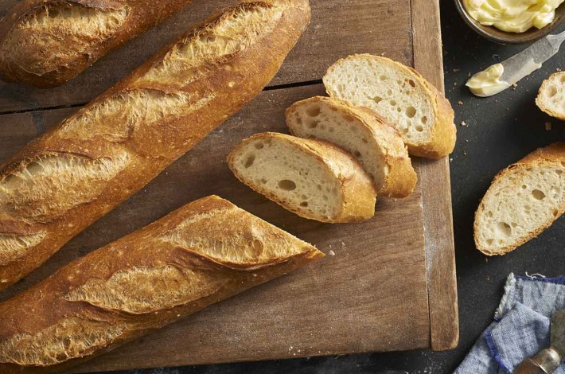

Baguettes

Description
These crunchy baguettes feature a chewy interior riddled
with holes, and a crisp, deep-golden crust. While it's
a challenge to make "real" baguettes at home, this
version is probably as close to an artisan bakery
version as you're going to find. The ingredients in
baguettes are pure simplicity: flour, water, salt, and
yeast. It's the baker's technique that turns an average
baguette into an all-star.
Ingredients
Starter
- 1/2 cup water, cool
- 1/16 teaspoon (a pinch) active dry yeast
- 1 cup all-purpose flour
Dough
- The starter
- 1 cup + 2 tablespoons water, lukewarm
- 1 1/2 teaspoons active dry yeast
- 3 1/2 all-purpose flour
- 2 teaspoons table salt
Steps
- Weigh your flour; or measure it by gently spooning
it into a cup, then sweeping off any excess. In a
large bowl, combine the starter ingredients.
- To make the starter: Mix everything together to make
a soft dough. Cover and let rest at room temperature
for about 14 hours; overnight works well. The
starter should have expanded and become bubbly.
- To make the dough: Mix and knead everything together
— by hand, mixer or bread machine set on the dough
cycle — to make a soft, somewhat smooth dough; it
should be cohesive, but the surface may still be a
bit rough. If you're using a stand mixer, knead for
about 4 minutes on medium-low speed (speed 2 on a
KitchenAid); the finished dough should stick a bit
at the bottom of the bowl.
- Place the dough in a lightly greased medium-sized
bowl, cover the bowl, and let the dough rest and
rise for 45 minutes. Gently deflate the dough and
fold its edges into the center, then turn it over
in the bowl before letting it rise for an additional
45 minutes, until it's noticeably puffy.
- Turn the dough out onto a lightly greased work
surface. Gently deflate it, and divide it into three
equal pieces.
- Round each piece of dough into a rough ball by
pulling the edges into the center. Cover with
greased plastic wrap, and let rest for 15 minutes;
or for up to 1 hour, if that works better with your
schedule.
- Working with one piece at a time, flatten the dough
slightly then fold it nearly (but not quite) in
half, sealing the edges with the heel of
your hand.
- Turn the dough around 180° and repeat: fold, then
flatten. Repeat this whole process again; the dough
should have started to elongate itself.
- With the seam side down, cup your fingers and gently
roll the dough into a 16" log. Your goal is a 15"
baguette, so 16" allows for the slight shrinkage
you'll see once you're done rolling. Taper each end
of the log slightly to create the baguette's typical
"pointy" end.
- Place the logs seam-side down onto a lightly greased
or parchment-lined sheet pan or pans; or into the
folds of a heavily floured cotton dish towel (or
couche). Cover them with lightly greased plastic
wrap, and allow the loaves to rise until they're
slightly puffy ("marshmallow-y" is the term we use in
our baking school). The loaves should certainly look
lighter and less dense than when you first shaped them,
but won't be anywhere near doubled in bulk. This should
take about 45 minutes to an hour at room temperature
(about 68°F).
- Towards the end of the rising time, preheat your
oven to 450°F with a cast iron pan on the floor of
the oven, or on the lowest rack. If you're using a
baking stone, place it on a middle rack. Start to
heat 1 1/2 cups water to boiling.
- If your baguettes have risen in a dish towel or
couche, gently roll them (seam-side up) onto a
transfer peel and then roll back over onto a piece
of parchment, seam-side down. If you don't have a
transfer peel, roll the baguettes onto a piece of
parchment (seam-side down) and then place the
parchment on a baking sheet.
- Using a baker's lame (a special curved blade) or a
very sharp knife held at about a 45° angle, make
three to five long lengthwise slashes in each
baguette.
- Load the baguettes into the oven. If you're baking
on a stone, use a baker's peel to transfer the
baguettes, parchment and all, onto the hot stone.
Carefully pour the boiling water into the cast iron
pan, and quickly shut the oven door. The billowing
steam created by the boiling water will help the
baguettes rise, and give them a lovely, shiny
crust.
- Bake the baguettes — on the pan, or on a stone —
for 24 to 28 minutes, or until they're a very deep
golden brown. Remove them from the oven and cool
them on a rack. Or, for the very crispiest
baguettes, turn off the oven, crack it open about
2", and allow the baguettes to cool completely in
the oven, until both baguettes and oven are at room
temperature.
- Storage information: Store any leftover baguettes in
a paper bag overnight; freeze for longer storage.
Thaw and reheat just before serving.